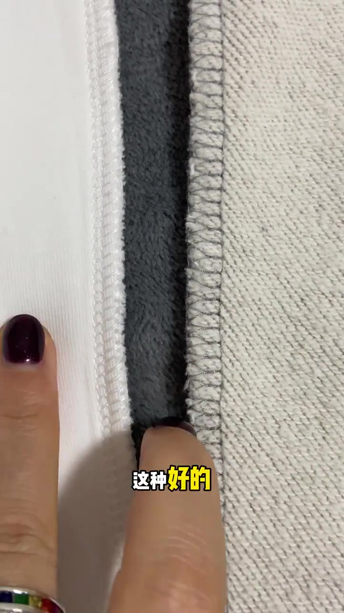
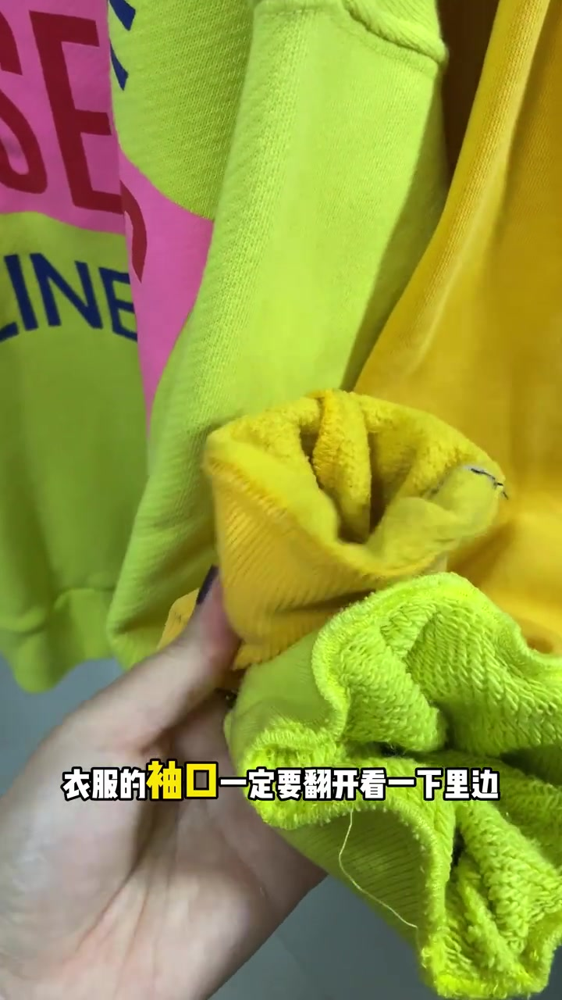
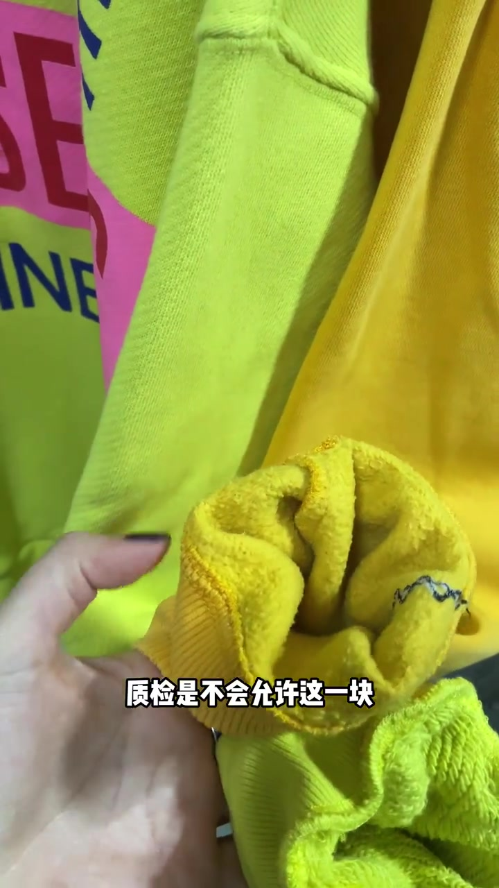
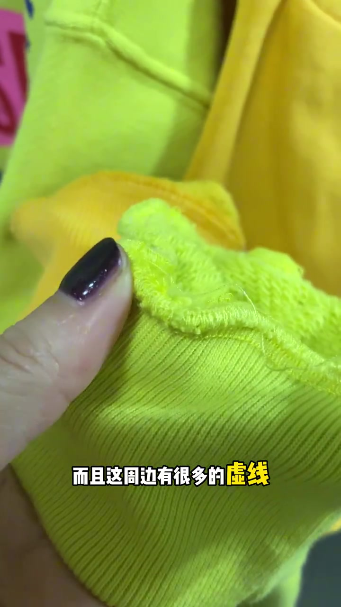
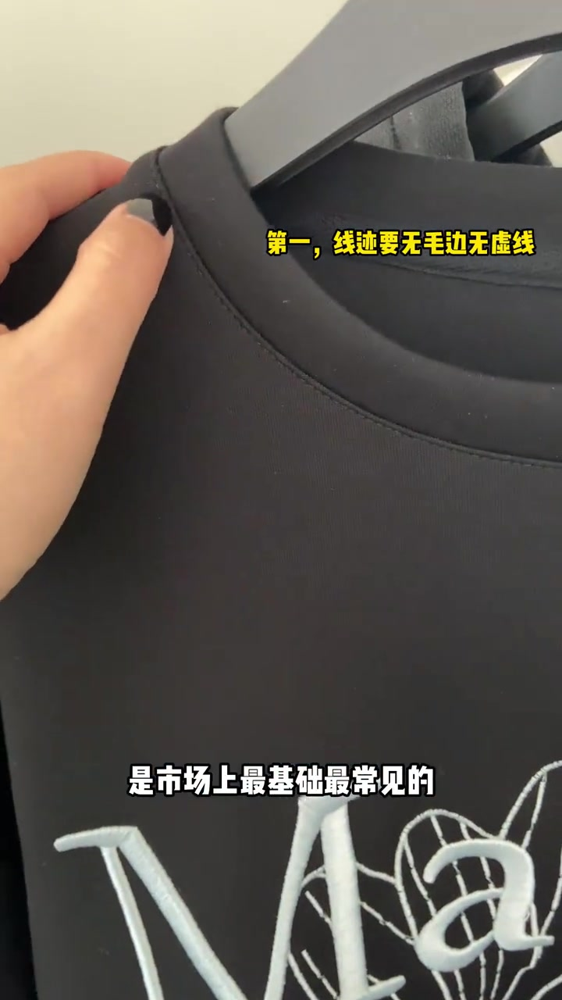
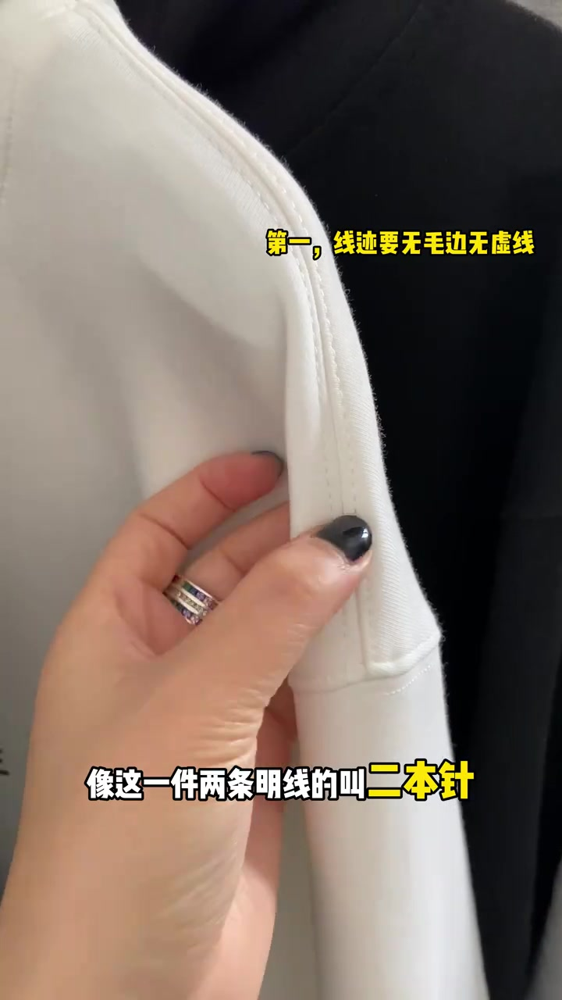
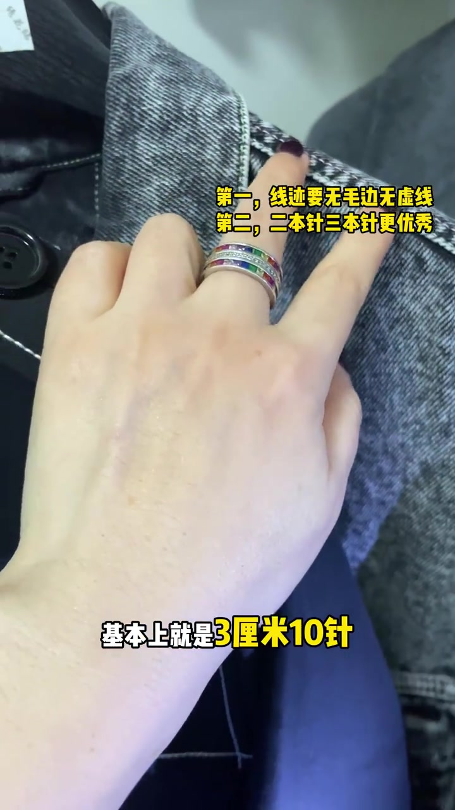
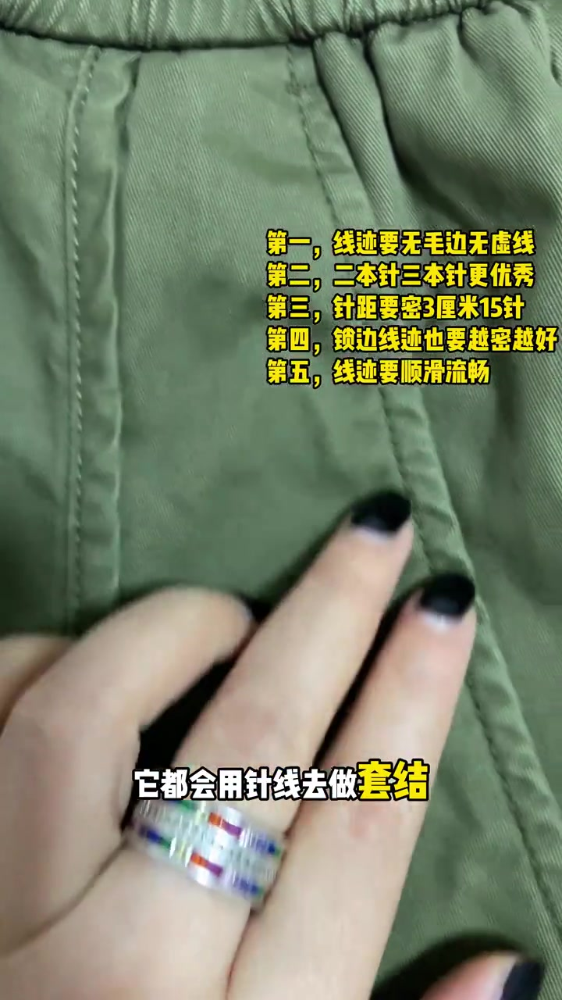

开场：先把袖口翻开，看质检有没有放过线头
镜头先给到一件内里锁边偏松的对比样，叠字写“那这种就是差的”。主讲人马上把话题落到可操作动作：衣服袖口一定要翻开看里边。
理由很具体——好品质衣服出厂前最后一道工序是质检，质检不会允许袖口内侧有多余线头。她翻开一件荧光绿卫衣袖口：反面毛圈面相对干净时，字幕就落到“都是很干净的”。
可见字幕校正：Whisper 把开场“差的这种号”听成“插了这种号”，把“一本针／针距／锁边／套结／加固”等术语听成音近字。下文按画面字幕叙述，文末转录区仍保留原始分段。



长线头不够，还要盯周边虚线
反例继续放大：不只是一根很长的线头，袖口接缝周边还有很多虚线。字幕提醒——虚线后期就容易出现拖线。这一段把“当下难看”升级成“越穿越糟”的风险。

明线条数：一条叫一本针，两条才叫二本针
话题切到肩领明线。黑 T 上只走一条明线，主讲人说这是市场上最基础最常见的“一本针”。再换到白色卫衣肩缝：两条平行明线，字幕明确写“像这一件两条明线的叫二本针”，并把它当作品质不错的象征。
画面右上角叠字同步累积第一条标准：“线迹要无毛边无虚线”。主讲人把二本针／三本针写成更优秀的方向，这是经验立场，不是所有品类的强制工艺规范。


针距要配面料：厚料可宽，薄料要密
主讲人强调“针距很重要”：面料越厚针距越宽，面料越薄针距越窄。风衣、牛仔一类，她给的参考是 3 厘米 10 针；过宽会显得质量差。衬衣则大概 3 厘米十四五针，针数再高到十七八针更好。
叠字此时已经写到第三条：“针距要密 3 厘米 15 针”——这是视频后半段反复压在画面上的总括值，和牛仔 10 针、衬衣十四五针的分品类说法要一起看，不能当成唯一死标准。

内里锁边要密，袖笼线要顺
镜头回到衣里锁边：主讲人说这些锁边线迹也一样，越密实越好；叠字补上第四条“锁边线迹也要越密越好”。接着对比两件针织：袖笼线走得顺、很流畅的，穿上会显品质；走线歪歪扭扭的，穿上就显得廉价。第五条叠字同步出现：“线迹要顺滑流畅”。
收尾：受力处用套结加固
最后落到结构安全：好品质衣服所有受力的地方，都会用针线去做套结来加固。画面停在橄榄绿色裙装腰缝附近，手势示意加固位置，叠字清单已攒满五条。

整条片子的推进顺序是：先排除线头／虚线 → 再看明线条数 → 再按面料调针距 → 再查锁边与顺滑 → 最后查套结。它教的是店内快筛，不是实验室级工艺鉴定。